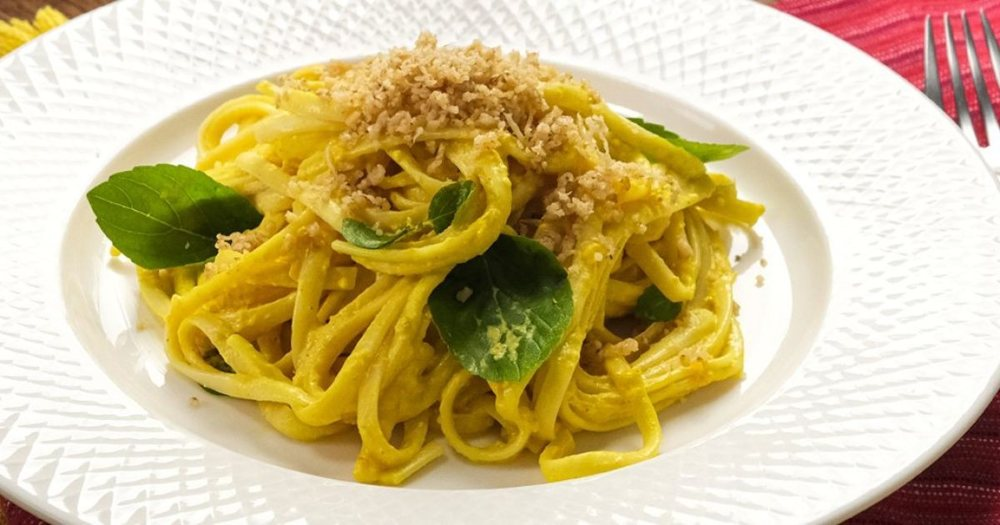

Massas
Molho de pimentão

Ingredientes
- 1 kg de pimentão amarelo
- ¼ xícara de azeite de oliva
- 2 dentes de alho amassados
- 1 cebola picada
- Sal e pimenta-do-reino a gosto
- ½ xícara de creme de leite
Modo de preparo
- Ligue o forno em temperatura alta (200 °C) e coloque uma assadeira com água na grelha inferior do forno.
- Depois de 5 minutos, coloque os pimentões inteiros diretamente sobre a grelha superior do forno. Deixe cozinhar por cerca de 40 minutos, virando os pimentões a cada 10 minutos.
- Retire os pimentões do forno e ponha dentro de um saco plástico que feche bem. Reserve por 15 minutos.
- Ponha os pimentões numa tigela com água fria e elimine a pele e as sementes. Corte em tiras.
- Numa panela, aqueça o azeite. Junte o alho e a cebola, e frite até a cebola ficar transparente. Acrescente o pimentão e cozinhe por 15 minutos.
- Retire do fogo, deixe esfriar um pouco e passe metade do pimentão no liquidificador. Ponha o purê obtido na panela e misture com as tiras de pimentão. Tempere. Cozinhe, mexendo de vez em quando, por 5 minutos. Deixe esfriar e congele.
Observação
Para economizar tempo, despele os pimentões no micro-ondas: fure-os com um garfo, ponha numa vasilha com um pouco de água e leve ao micro-ondas na potência média máxima por 8 minutos, virando-os a cada 2 minutos. Congelamento: coloque o molho em recipiente rígido ou em pote de polietileno; retire o ar, feche bem, etiquete e leve ao freezer (ou direto num saco plástico, retirando o ar). Descongelamento: na geladeira de um dia para o outro, ou numa panela em fogo brando, em banho-maria; junte o creme de leite e aqueça, sem deixar ferver. Verifique o tempero e sirva.